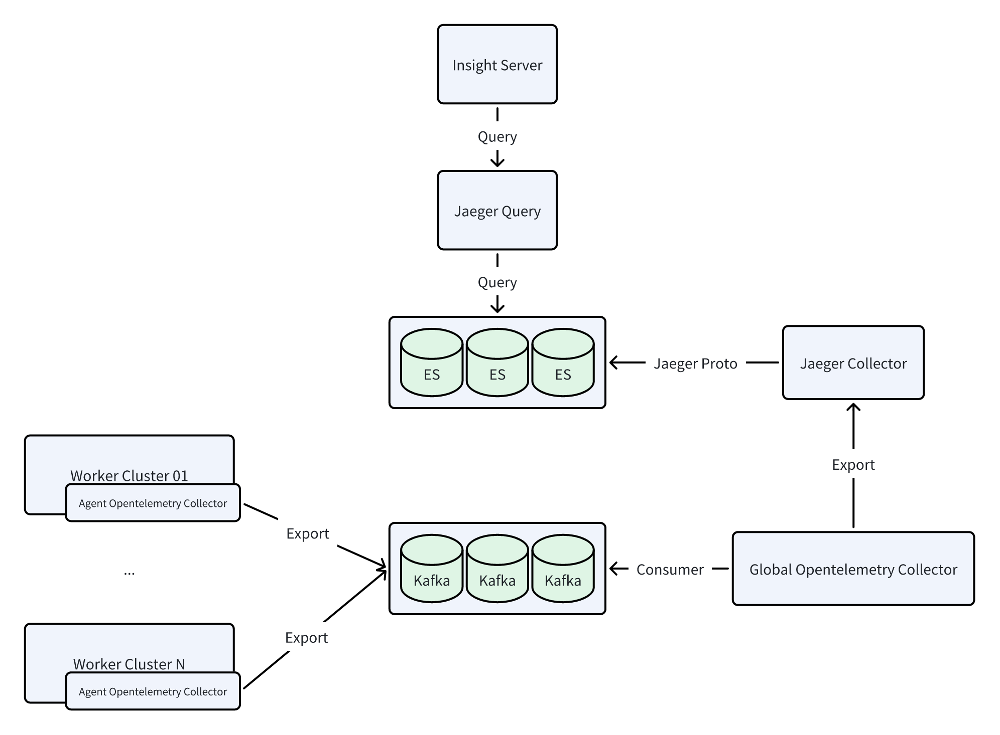

Enable Big Log and Big Trace Modes¶
The Insight Module supports switching log to Big Log mode and trace to Big Trace mode, in order to enhance data writing capabilities in large-scale environments. This page introduces following methods for enabling these modes:
- Enable or upgrade to Big Log and Big Trace modes through the installer (controlled by the same parameter value in
manifest.yaml) - Manually enable Big Log and Big Trace modes through Helm commands
Logs¶
This section explains the differences between the normal log mode and the Big Log mode.
Log Mode¶
Components: Fluentbit + Elasticsearch
This mode is referred to as the ES mode, and the data flow diagram is shown below:

Big Log Mode¶
Components: Fluentbit + Kafka + Vector + Elasticsearch
This mode is referred to as the Kafka mode, and the data flow diagram is shown below:

Traces¶
This section explains the differences between the normal trace mode and the Big Trace mode.
Trace Mode¶
Components: Agent opentelemetry-collector + Global opentelemetry-collector + Jaeger-collector + Elasticsearch
This mode is referred to as the OTlp mode, and the data flow diagram is shown below:

Big Trace Mode¶
Components: Agent opentelemetry-collector + Kafka + Global opentelemetry-collector + Jaeger-collector + Elasticsearch
This mode is referred to as the Kafka mode, and the data flow diagram is shown below:

Enabling via Installer¶
When deploying/upgrading AI platform using the installer, the manifest.yaml file includes the infrastructures.kafka field.
To enable observable Big Log and Big Trace modes, Kafka must be activated:
apiVersion: manifest.daocloud.io/v1alpha1
kind: SuanovaManifest
...
infrastructures:
...
kafka:
enable: true # Default is false
cpuLimit: 1
memLimit: 2Gi
pvcSize: 15Gi
Enable¶
When using a manifest.yaml that enables kafka during installation, Kafka middleware will be installed by default,
and Big Log and Big Trace modes will be enabled automatically. The installation command is:
Upgrade¶
The upgrade also involves modifying the kafka field. However, note that since the old environment was installed
with kafka: false, Kafka is not present in the environment. Therefore, you need to specify the upgrade
for middleware to install Kafka middleware simultaneously. The upgrade command is:
Note
After the upgrade is complete, you need to manually restart the following components:
- insight-agent-fluent-bit
- insight-agent-opentelemetry-collector
- insight-opentelemetry-collector
Enabling via Helm Commands¶
Prerequisites: Ensure that there is a usable Kafka and that the address is accessible.
Use the following commands to retrieve the values of the old versions of Insight and insight-agent (it's recommended to back them up):
helm get values insight -n insight-system -o yaml > insight.yaml
helm get values insight-agent -n insight-system -o yaml > insight-agent.yaml
Enabling Big Log¶
There are several ways to enable or upgrade to Big Log mode:
First, run the following Insight upgrade command, ensuring the Kafka brokers address is correct:
helm upgrade insight insight-release/insight \
-n insight-system \
-f ./insight.yaml \
--set global.kafka.brokers="10.6.216.111:30592" \
--set global.kafka.enabled=true \
--set vector.enabled=true \
--version 0.30.1
Then, run the following insight-agent upgrade command, ensuring the Kafka brokers address is correct:
Follow these steps to modify the YAML and then run the helm upgrade command:
-
Modify
insight.yaml -
Upgrade the Insight component:
-
Modify
insight-agent.yaml -
Upgrade the insight-agent:
In the Container Management module, find the cluster, select Helm Apps from the left navigation bar, and find and update the insight-agent.
In Logging Settings, select kafka for output and fill in the correct brokers address.
Note that after the upgrade is complete, you need to manually restart the insight-agent-fluent-bit component.
Enabling Big Trace¶
There are several ways to enable or upgrade to Big Trace mode:
First, run the following Insight upgrade command, ensuring the Kafka brokers address is correct:
helm upgrade insight insight-release/insight \
-n insight-system \
-f ./insight.yaml \
--set global.kafka.brokers="10.6.216.111:30592" \
--set global.kafka.enabled=true \
--set global.tracing.kafkaReceiver.enabled=true \
--version 0.30.1
Then, run the following insight-agent upgrade command, ensuring the Kafka brokers address is correct:
Follow these steps to modify the YAML and then run the helm upgrade command:
-
Modify
insight.yaml -
Upgrade the Insight component:
-
Modify
insight-agent.yaml -
Upgrade the insight-agent:
In the Container Management module, find the cluster, select Helm Apps from the left navigation bar, and find and update the insight-agent.
In Trace Settings, select kafka for output and fill in the correct brokers address.
Note that after the upgrade is complete, you need to manually restart the insight-agent-opentelemetry-collector and insight-opentelemetry-collector components.